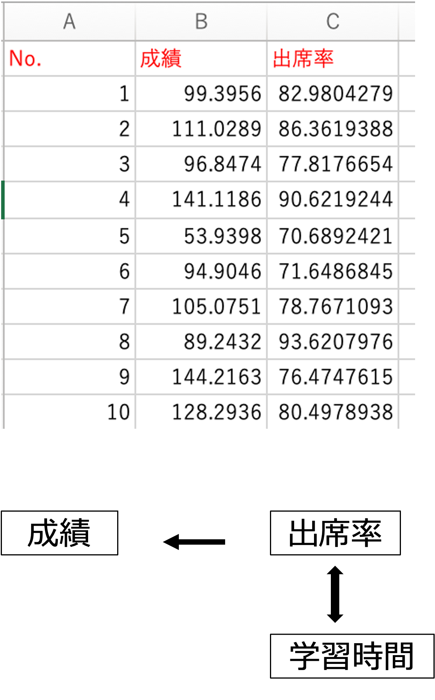
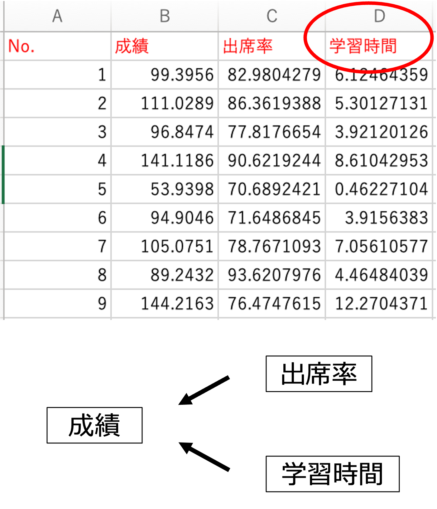
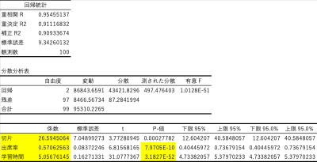
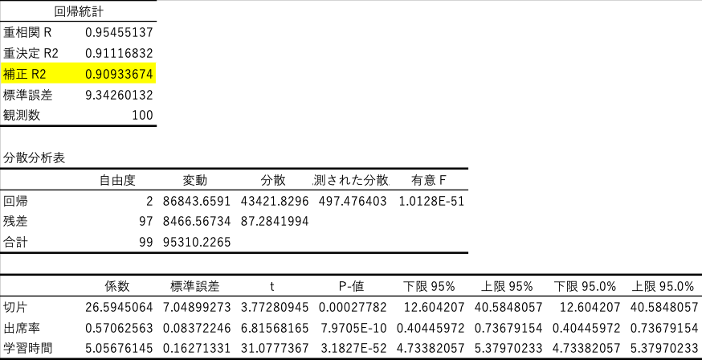
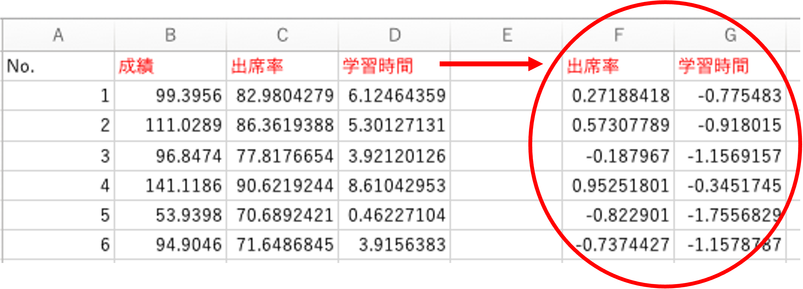
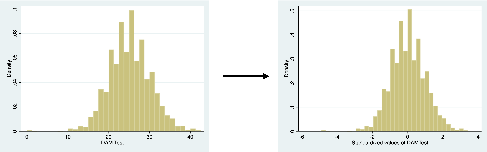
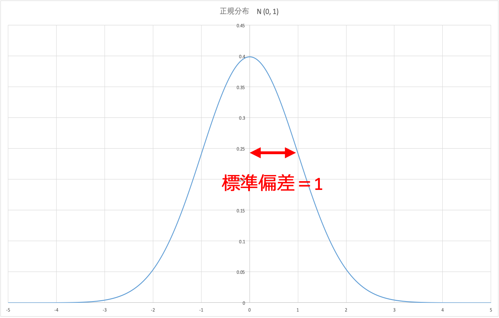

23 重回帰分析
2つ以上の説明変数を使って、それぞれの影響をどう調べるか？
・二つ以上の独立変数（説明変数）を用いる回帰分析
・単回帰分析と重回帰分析の違い、自由度調整済み決定係数、係数（影響）の比較方法
23.1 前回の振り返り
前回（第9回）は、ビールの出荷量を平均気温で説明する単回帰分析を行いました。その結果、12月は気温が低いのにビールの出荷量が最も多く、平均気温だけではビールの出荷量をうまく説明できませんでした。12月には、年末の忘年会や贈答といった「気温以外の要因」があるからです。
このように、被説明変数に影響を与える要因が複数ある場合には、それらを同時に説明変数として加えた分析が必要になります。これが、今回学ぶ重回帰分析です。
23.2 単回帰分析と重回帰分析
- 従属変数・被説明変数（\(Y\)）を、一つの独立変数・説明変数（\(X\)）で説明する回帰分析を単回帰分析と呼びます。
- それに対して、二つ以上の独立変数・説明変数（\(X\)）を使う回帰分析を重回帰分析と呼びます。
- 重回帰分析は、複数の単回帰分析を同時に行なっているのではありません。
- 重回帰分析の係数は、他の説明変数をコントロールしたときに、その説明変数が被説明変数に与える影響の大きさを示しています。
23.3 重回帰分析のイメージ
- \(Y\) と \(X\) の関係を式で表すという点は、単回帰分析と同じです。重回帰分析では \(X\) の数が増えます。
- 単回帰分析では、平面上の点の真ん中を通る「直線」を引きました。重回帰分析では、多次元の空間の中にデータが散らばり、そのちょうど真ん中を通るように「面」を作るイメージです。
- 一つの式の中に複数の \(X\) を入れることにより、他の \(X\) の影響を制御した場合の変化を求めることができます。
\[ Y_i = a + b_1 x_{1i} + b_2 x_{2i} + \cdots + b_k x_{ki} + e_i \]
- 例えば \(b_2\) は、「他の \(x\) を一定とした場合の、\(x_2\) が1単位増えたときの \(y\) の変化量」を表します。
重回帰分析の「面」のイメージは、次のサイトで動かしながら確認できます。
23.4 回帰モデル（regression model）
確率変数 \(Y\) が、別の変数 \(X\) に依存して変動する場合の確率モデルを、回帰モデルと呼びます。
- 変数 \(X\) が一つの場合、単回帰モデルと呼ばれます。
\[ y_i = a + b x_i + e_i \]
- 変数 \(X\) が二つ以上の場合、重回帰モデルと呼ばれます。
\[ y_i = a + b_1 x_{1i} + b_2 x_{2i} + b_3 x_{3i} + \cdots + b_k x_{ki} + e_i \]
- \(X\)：原因変数、説明変数、独立変数（independent variable）
- \(Y\)：結果変数、被説明変数、従属変数（dependent variable）
「原因変数」「結果変数」は、因果関係を想定した呼び方です。前回説明したとおり、回帰分析で分かるのは変数の間の関係であり、因果関係はあくまで「想定」であることに注意してください。
ここで、\(k\) は説明変数の数、\(n\) はデータの数（標本サイズ）です。
23.5 単回帰分析と重回帰分析の違い
単回帰分析
成績と授業の出席率の関係を考えます（演習ファイルの「練習_1」シート、100人分のデータ）。

\[ \text{成績} = a + b \times \text{出席率} + e \]
\[ \text{成績} = 89.75 + 0.45 \times \text{出席率} + e \]
この結果は、「出席率が1%上がると、成績が0.45点上がる」という関係を表しています。
しかし、この関係には、他の要素が含まれているのではないでしょうか。例えば、授業に休まず出席する人は、授業外でもしっかりと勉強するので、だから成績が良いのではないか、と考えることができます。
そうであれば、学習時間の効果を一定にしたうえで、出席率の効果を確認する必要があります。そこで、学習時間も変数として加えた重回帰分析を行います。
重回帰分析
成績と授業の出席率、学習時間の関係を考えます（演習ファイルの「練習_2」シート）。一つの式に2つ以上の変数を入れることにより、他の影響を制御（コントロール）した状態での影響を推計することができます。

\[ \text{成績} = a + b_1 \times \text{出席率} + b_2 \times \text{学習時間} + e \]
\[ \text{成績} = 26.59 + 0.57 \times \text{出席率} + 5.06 \times \text{学習時間} + e \]
- 学習時間の影響（多い少ない）を制御した状態で（学習時間の影響を考慮した上で）、出席率が1%上がると、成績は0.57点上がります。
- 逆に、出席率の影響を制御した状態で、学習時間が1時間増えると、成績は5.06点上がります。
23.6 単回帰分析と重回帰分析で、何が変わったのか
「練習_1」（単回帰分析）と「練習_2」（重回帰分析）の出席率の結果を比べると、次のようになります。
| 単回帰分析（練習_1） | 重回帰分析（練習_2） | |
|---|---|---|
| 出席率の係数 | 0.451 | 0.571 |
| 出席率の係数の標準誤差 | 0.275 | 0.084 |
| 出席率の係数の \(t\) 値 | 1.639 | 6.816 |
| 出席率の係数のP値 | 0.104 | 0.000000001 未満 |
| 決定係数 \(R^2\) | 0.027 | 0.911 |
ここから、2つのことが分かります。
1. 係数の値の変化
- 出席率の係数は、0.451から0.571に変わりました。
- 実は、このデータでは、出席率と学習時間の相関係数は \(-0.046\) で、ほとんど相関がありません。そのため、「出席する人ほどよく勉強する」という効果が出席率の係数に含まれていたわけではなく、係数の変化は小さくなっています。
- もし出席率と学習時間に強い正の相関があれば、単回帰分析の出席率の係数には学習時間の効果が含まれてしまい、重回帰分析の係数よりずっと大きくなります（下の「係数が変わる仕組みを確かめよう」で確認できます）。
2. 係数の精度の変化
- 単回帰分析では、出席率の係数のP値は0.104で、有意水準5%で有意ではありませんでした。
- 重回帰分析では、P値が非常に小さくなり、有意になりました。
- これは、学習時間が成績のばらつきの大部分を説明する（決定係数が0.027から0.911に上がった）ため、説明できない部分（残差）が小さくなり、出席率の係数の標準誤差が0.275から0.084に小さくなったからです。
- つまり、被説明変数に大きな影響を与える変数を加えると、他の係数をより正確に推定できるようになります。
Note単回帰分析の係数と重回帰分析の係数の関係
単回帰分析の出席率の係数は、次のように分解できます。
\[ \underbrace{0.451}_{\text{単回帰の係数}} = \underbrace{0.571}_{\text{重回帰の出席率の係数}} + \underbrace{5.057}_{\text{重回帰の学習時間の係数}} \times \underbrace{(-0.024)}_{\text{学習時間を出席率で回帰した係数}} \]
- 最後の \(-0.024\) は、「出席率が1%高い人は、学習時間が平均して何時間多いか」を表します（学習時間を出席率に回帰した単回帰分析の係数）。
- このデータでは、この値がほぼ0（わずかにマイナス）なので、単回帰の係数（0.451）は、重回帰の係数（0.571）とそれほど変わりませんでした。
- もし出席率が高い人ほど学習時間が長ければ（この値がプラスなら）、単回帰の係数は、学習時間の効果（5.057 × この値）の分だけ大きくなります。これが「出席率の効果に、学習時間の効果が含まれてしまう」ということの意味です。
- このように、関係のある変数を式に入れずに分析すると、係数が偏ってしまうことを、除外変数バイアス（omitted variable bias）といいます。
23.7 係数が変わる仕組みを確かめよう
出席率と学習時間の相関の強さを変えて、100人分のデータを作り、単回帰分析と重回帰分析の出席率の係数を比べてみましょう。データは、「本当の関係」を \(\text{成績} = 26.59 + 0.57 \times \text{出席率} + 5.06 \times \text{学習時間} + \text{誤差}\) として作っています。
- 上の図の黒の点線が、本当の出席率の係数（0.57）です。
- 相関をプラスにすると：単回帰分析の係数は0.57より大きくなります。出席率の高い人ほど学習時間も長いので、学習時間の効果が出席率の係数に含まれてしまうからです。重回帰分析の係数は、相関を変えても0.57の近くにとどまります。
- 相関をマイナスにすると：単回帰分析の係数は0.57より小さくなり、場合によってはマイナスになります。
- 相関を \(-0.05\) 付近にすると：演習ファイルのデータと同じような状況になります。係数の違いは小さいですが、単回帰分析の信頼区間（オレンジの線）がとても長く、0を含むことが多いのに対して、重回帰分析の信頼区間はとても短くなります。
- 下の図は、作ったデータの出席率と学習時間の散布図です。
23.8 回帰係数の検定
重回帰分析でも、単回帰分析と同じように、それぞれの係数が0かどうかを検定します。
手順1：仮説を設定する
それぞれの説明変数について、次の仮説を検定します。
- 帰無仮説（\(H_0\)）：\(\beta_j = 0\)（他の説明変数を一定としたとき、\(x_j\) は \(y\) と関係しない）
- 対立仮説（\(H_1\)）：\(\beta_j \neq 0\)（他の説明変数を一定としたとき、\(x_j\) は \(y\) と関係する）
ここで、\(\beta_j\) は母集団の回帰式の、\(j\) 番目の説明変数の係数です。
手順2：有意水準（臨界値）を決める
有意水準は5%（両側検定）とします。
手順3：検定統計量 \(t\) を求める
\[ t = \frac{b_j}{SE(b_j)} \]
これが、自由度 \(n - K\) の \(t\) 分布に従うことを使って検定します。ここで、\(K\) は切片を含めた係数の数（説明変数の数 \(k\) + 1）です。この例では、\(n = 100\)、\(K = 3\) なので、自由度は97です。
23.9 エクセルの分析結果
成績を被説明変数、出席率と学習時間を説明変数として、エクセルの分析ツール「回帰分析」で分析した結果です（演習ファイルの「練習_2」シート）。

手順4：検定統計量と臨界値を比較する 手順5：検定の結論を出す
自由度97、有意水準5%（両側）の臨界値は1.985です。
| 係数 | 標準誤差 | \(t\) | P値 | 結論（有意水準5%） | |
|---|---|---|---|---|---|
| 切片 | 26.595 | 7.049 | 3.773 | 0.0003 | — |
| 出席率 | 0.571 | 0.084 | 6.816 | 0.000000001 未満 | 有意 |
| 学習時間 | 5.057 | 0.163 | 31.078 | 0.000000001 未満 | 有意 |
- 出席率：\(t = 6.816\) は臨界値1.985より大きいので、帰無仮説は棄却されます。学習時間を一定としたとき、出席率が1%高いと成績は0.57点高く、この関係は有意です。
- 学習時間：\(t = 31.078\) は臨界値1.985より大きいので、帰無仮説は棄却されます。出席率を一定としたとき、学習時間が1時間多いと成績は5.06点高く、この関係は有意です。
- 切片：出席率も学習時間も0のときの成績の予測値ですが、そのような学生はデータにいないので、切片そのものに大きな意味はありません。
- 有意 F：「すべての説明変数の係数が0である（どの説明変数も成績と関係しない）」という帰無仮説の検定のP値です。重回帰分析では、各係数の検定とは別に、回帰式全体が意味を持つかどうかを示します。この例では非常に小さいので、回帰式全体として有意です。
23.10 自由度調整済み決定係数
- 重回帰分析のデータへの当てはまりの指標には、単回帰分析の場合と同様に、決定係数が使われます。
- 重回帰分析の場合、\(y\) と1つの \(x\) との相関係数を2乗しても、決定係数にはなりません。
- 決定係数は、「\(y\) と予測値 \(\hat{y}\) の相関係数」の2乗になります。エクセルの出力の「重相関 R」は、この相関係数のことです（この例では \(0.955^2 = 0.911\)）。
- 決定係数は、説明変数の数が増えるにつれて大きくなり、1に近づくという性質を持ちます（説明する材料が増えるので、関係のない変数を加えても、説明力は少しずつ大きくなります）。
- そこで、説明変数が増えた分を考慮した次の決定係数を考え、これを自由度調整済み決定係数と呼びます（エクセルの出力の「補正 R2」）。
\[ \bar{R}^2 = 1 - \frac{\dfrac{\displaystyle\sum_{i=1}^{n}(y_i - \hat{y}_i)^2}{n - K}}{\dfrac{\displaystyle\sum_{i=1}^{n}(y_i - \bar{y})^2}{n - 1}} = 1 - \frac{n - 1}{n - K} \cdot \frac{\displaystyle\sum_{i=1}^{n}(y_i - \hat{y}_i)^2}{\displaystyle\sum_{i=1}^{n}(y_i - \bar{y})^2} \]
ここで、\(K\) は切片を含めた係数の数（説明変数の数 + 1）です。

計算例（練習_2）
\(n = 100\)、\(K = 3\)（切片、出席率、学習時間）、残差変動8466.57、全変動95310.23なので、
\[ \bar{R}^2 = 1 - \frac{100 - 1}{100 - 3} \times \frac{8466.57}{95310.23} = 1 - \frac{99}{97} \times 0.0888 = 0.909 \]
となり、エクセルの出力の「補正 R2」（0.909）と一致します。
- 説明変数の数が異なる回帰式を比べるときは、決定係数ではなく、自由度調整済み決定係数を使います。
- 自由度調整済み決定係数は、関係のない変数を加えると、小さくなることがあります。
23.11 変数間の影響の比較
\[ \text{成績} = 26.59 + 0.57 \times \text{出席率} + 5.06 \times \text{学習時間} + e \]
- 出席率が1%増えたときに、成績が0.57点上がります。
- 学習時間が1時間増えたときに、成績が5.06点上がります。
では、出席率と学習時間では、どちらの影響が大きいといえるでしょうか。「1%」と「1時間」は単位が違うので、係数の大きさをそのまま比べることはできません。
係数（影響）の大きさを比較したい場合には、各説明変数を標準化します。エクセルでは、STANDARDIZE 関数を使います。
=STANDARDIZE(X, AVERAGE(Xの値全部), STDEV.S(Xの値全部))
23.12 標準化
単位が違うデータ同士を比べられるように、平均0、分散1（標準偏差1）となるように変換することを標準化といいます。
\[ z_i = \frac{x_i - \bar{x}}{s_x} \]
標準化しても、分布の形は変わりません。平均が0に、ばらつきの大きさ（標準偏差）が1にそろうだけです。

23.13 標準化した重回帰分析
出席率と学習時間を標準化してから、重回帰分析を行います（演習ファイルの「練習_3」シート）。

標準化前
\[ \text{成績} = 26.59 + 0.57 \times \text{出席率} + 5.06 \times \text{学習時間} + e \]
- 出席率が1%増えると、成績が0.57点上がります。
- 学習時間が1時間増えると、成績が5.06点上がります。
標準化後
\[ \text{成績} = 125.83 + 6.41 \times \text{出席率（標準化）} + 29.21 \times \text{学習時間（標準化）} + e \]
- 出席率が1標準偏差増えると、成績が6.41点上がります。
- 学習時間が1標準偏差増えると、成績が29.21点上がります。
- したがって、学習時間の方が、成績への影響が大きいといえます。
分かりにくい人は、次のように考えましょう（偏差値は、平均50、標準偏差10になるように変換した値です）。
- 出席率の偏差値が10増えると、成績が6.41点上がります。
- 学習時間の偏差値が10増えると、成績が29.21点上がります。
標準化で変わること・変わらないこと
- 標準化したのは説明変数（出席率と学習時間）だけで、成績は標準化していません。そのため、係数の単位は「点」のままです。
- 切片の125.83は、説明変数がすべて平均値（標準化した値が0）のときの成績の予測値で、成績の平均値と同じになります。
- 標準化後の係数は、標準化前の係数に、その変数の標準偏差を掛けたものです。
- 出席率：\(0.571 \times 11.23 = 6.41\)
- 学習時間：\(5.057 \times 5.78 = 29.21\)
- 標準化しても、各係数の \(t\) 値、P値、決定係数は変わりません。変わるのは係数の「単位」だけです。
Note被説明変数も標準化する場合（標準化偏回帰係数）
- 成績（被説明変数）も標準化してから重回帰分析を行うと、係数は「説明変数が1標準偏差増えると、成績が何標準偏差上がるか」を表すようになります。これを標準化偏回帰係数といいます。
- この例では、出席率が0.21、学習時間が0.94になります（標準化後の係数6.41と29.21を、成績の標準偏差31.03で割った値）。
- どちらの方法でも、「どちらの説明変数の影響が大きいか」という比較の結論は同じです。
23.14 エクセルでの計算方法
演習ファイルの「練習」シートのように、A列にNo.、B列に成績（B2〜B101）、C列に出席率（C2〜C101）、D列に学習時間（D2〜D101）が入力されているとします（1行目は見出し）。
分析ツールの「回帰分析」で重回帰分析を行う方法（練習_2）
- 「データ」→「データ分析」→「回帰分析」を選びます。
- 「入力 Y 範囲」に成績の範囲（B1:B101）を指定します。
- 「入力 X 範囲」に、出席率と学習時間の2列をまとめて（C1:D101）指定します。
- 見出しの行も含めて指定したので、「ラベル」にチェックを入れます。
- 出力先を指定して「OK」を押します。
- 分析ツールでは、説明変数の列が隣り合って並んでいる必要があります。説明変数にしたい列が離れている場合は、列をコピーして隣り合うように並べ直してから指定します。
- 説明変数は、最大16個まで指定できます。
- 単回帰分析（練習_1）の場合は、「入力 X 範囲」に出席率の列（C1:C101）だけを指定します。
標準化した変数を作る方法（練習_3）
- F1セルに「出席率」、G1セルに「学習時間」と見出しを入力します。
- F2セルに次の式を入力し、F101までコピーします。
=STANDARDIZE(C2, AVERAGE($C$2:$C$101), STDEV.S($C$2:$C$101))- G2セルに次の式を入力し、G101までコピーします。
=STANDARDIZE(D2, AVERAGE($D$2:$D$101), STDEV.S($D$2:$D$101))- 分析ツールの「回帰分析」で、「入力 Y 範囲」に成績（B1:B101）、「入力 X 範囲」に標準化した2列（F1:G101）を指定して分析します。
AVERAGEとSTDEV.Sの範囲には、$を付けて絶対参照にします。付けないと、式をコピーしたときに範囲がずれてしまいます。
説明変数どうしの相関を確認する方法
分析ツールの「相関」で、出席率と学習時間（C1:D101）の相関係数を求めると、\(-0.046\) となります。重回帰分析を行う前に、説明変数どうしの相関を確認しておくと、単回帰分析と重回帰分析で係数がどのくらい変わりそうかの見当がつきます。
- 説明変数どうしの相関が非常に強い（例えば0.9以上）場合は、それぞれの係数の標準誤差が大きくなり、係数を正確に推定できなくなります。これを多重共線性（マルチコ）といいます。